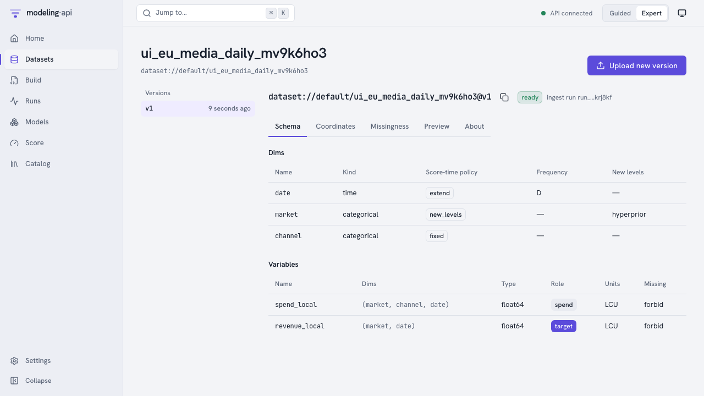
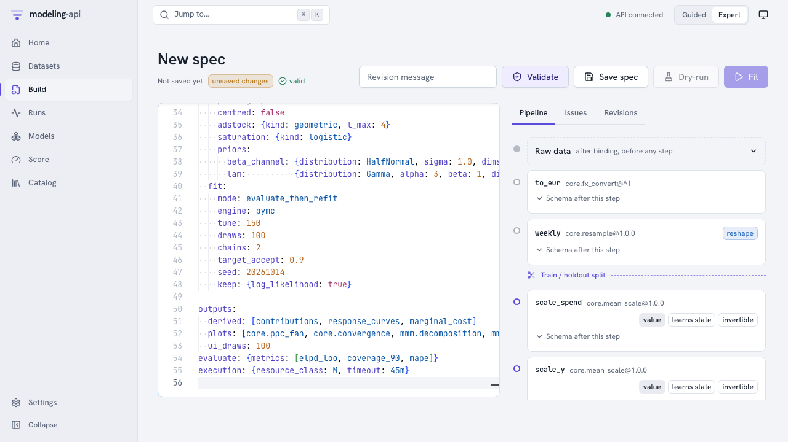
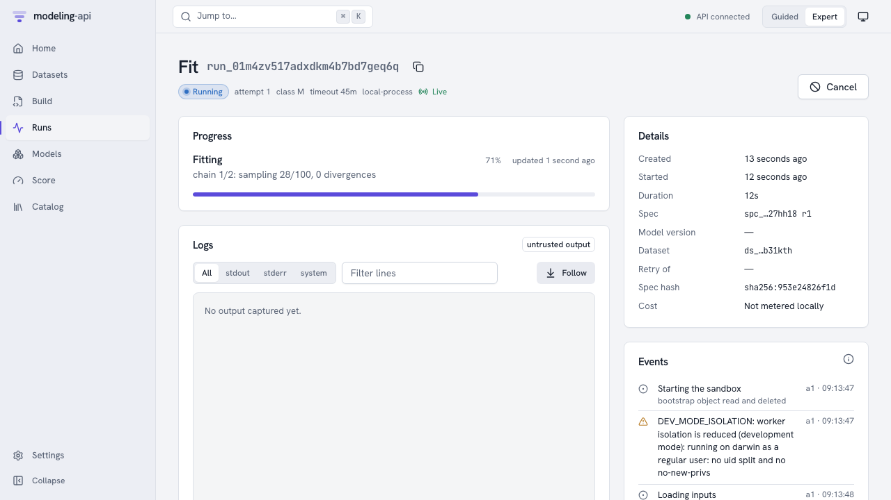
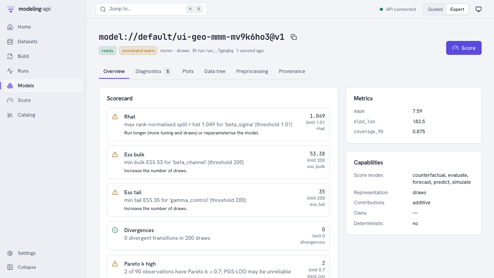
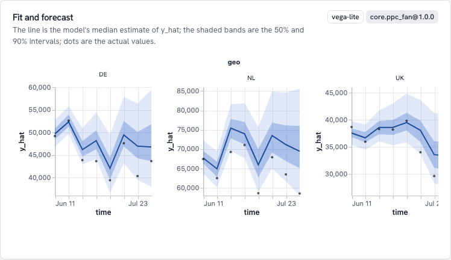
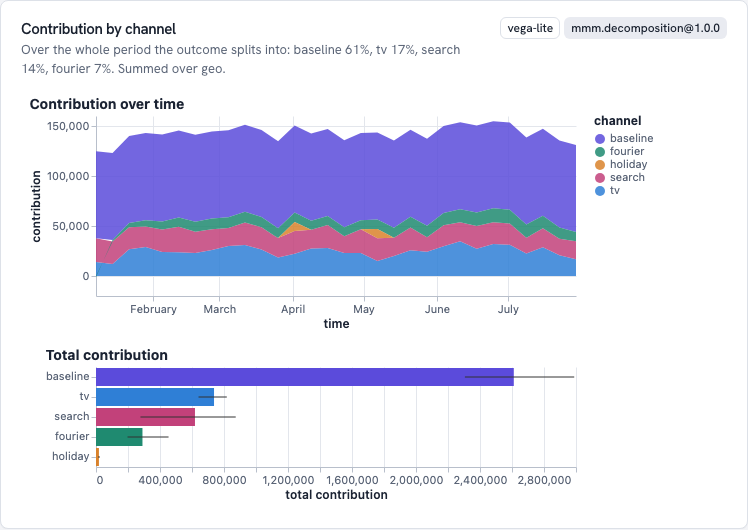
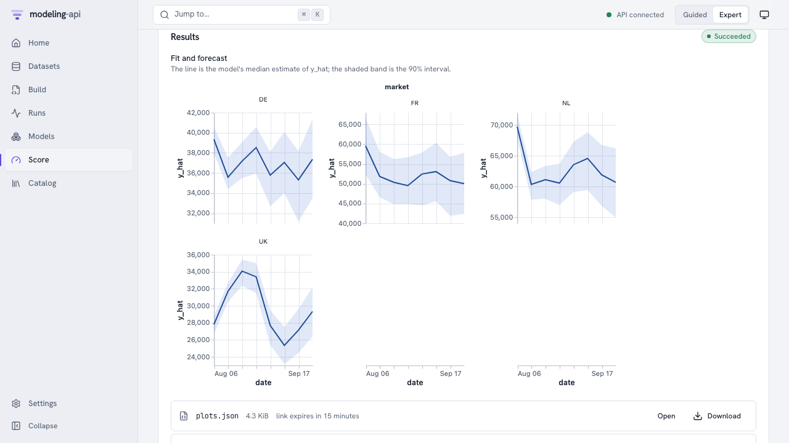

Your first model in the web app v0.2¶
This guide fits a hierarchical geo marketing-mix model on the local stack. The model is the E33 example of the corpus. Then the guide uses the model. You do all the work in the browser:
- Upload these datasets: daily spend and revenue for each market and channel, an FX table and a holiday table.
- Paste the model spec into the editor. The editor validates the spec while you type.
- Fit the model and monitor the sampler live.
- Read the sanity scorecard, the posterior predictive check and the channel decomposition.
- Score an 8-week forecast, a market that the model did not see, and a weekly budget in EUR.
The guide takes about ten minutes. You use most of this time to read. The fit uses very small sampler settings. It finishes in less than one minute on a laptop.
Before you start¶
Start the stack and let it continue to run (Local development):
make install
make dev # PostgreSQL, GCS shim, API, worker, web app, plot sandbox
open http://127.0.0.1:5173
Port 8000 taken?
You can move the API with export MAPI_API_URL=http://127.0.0.1:8010 before make dev.
All the other commands in this guide (make seed, make e2e) read the same variable. You
can move the other three ports in the same way. See Port conflicts.
This guide clicks through all the steps, and the uploads too. For the short path, see the
quickstart. In the short path, make seed loads the data
and the spec for you. For all the pages of the app, see The Expert web app.
Then write the demo files to a folder. This command does not upload the files:
| File | What it is | Upload it as |
|---|---|---|
eu_media_daily.zarr.zip |
30 weeks of daily spend_local(market, channel, date) and revenue_local(market, date) for NL, DE and UK (UK in GBP) |
eu_media_daily |
fx_daily.zarr.zip |
Daily EUR for each GBP, for the fit window and the forecast horizon | fx_daily |
holidays_eu.zarr.zip |
A daily holiday indicator | holidays_eu |
eu_media_future.zarr.zip |
Planned daily spend for the 8 weeks after the data (no revenue) | eu_media_future |
eu_media_future_fr.zarr.zip |
The same weeks and FR, a market that the model did not see | eu_media_future_fr |
eu_media_weekly_plan.zarr.zip |
A budget from a planner: weekly spend in EUR | eu_media_weekly_plan |
eu_media_window.zarr.zip |
The last four weeks of the data, for counterfactuals | eu_media_window |
eu-geo-mmm.yaml |
The model spec. It points at dataset://default/<name>@latest |
(paste it) |
make seed does steps 1 and 2 for you through the HTTP API. This guide clicks through them.
1. Upload the data¶
- Open Datasets → New dataset.
- Name the dataset
eu_media_dailyand make it. The upload panel opens. - Select
eu_media_daily.zarr.zip. - Click Upload and ingest.
The browser sends the file directly to object storage through a signed URL. Then a sandboxed
ingest run opens the file and checks it. The run keeps an immutable, content-addressed
version. The page refreshes automatically until the version is ready.

The schema came with the file:
marketallows new levels at score time, with a hyperprior.channelis fixed.datecan be extended into the future.revenue_localis the target andspend_localis spend. Both are in local currency.
A CSV upload asks you for the same mapping, one column at a time.
Do the upload steps again for the other six files. Use the names in the table above.
2. Write and validate the spec¶
- Open Build → New spec.
- Select all the text in the editor.
- Paste
eu-geo-mmm.yaml.
The editor validates the spec while you type. The server resolves each dataset:// reference
and each step. It checks the settings. It moves the schema through the pipeline, but it does
not run anything. Problems show as wavy lines at the exact YAML path.

The pipeline panel shows what each step does to the data:
to_eurchanges spend and revenue to EUR with thefxside table.weeklyresamples days to weeks. A week exists only from this stage. Thus the train/holdout split is immediately after this step.scale_spend,scale_yandlagslearn state from the training weeks only.
To see the variables and dims at a stage, open Schema after this step on the card.
When the spec is valid, click Save spec. The spec becomes revision r1 of
spec://default/eu-geo-mmm.
If you ran make seed before, the name is not available. In this case, change
metadata.name first. Or open the seeded spec under Build.
3. Fit it¶
Click Fit. The run page monitors the run through server-sent events.

- Starting the sandbox: The supervisor of the run read its one-time bootstrap object and deleted it. Thus the credentials of the object are gone before model code runs.
DEV_MODE_ISOLATIONis usual on a laptop. The local executor cannot change to a different user for the model code. Containers and Cloud Run can.- The progress bar and the message come directly from the sampler (
chain 1/2: sampling 39/100).
fit.mode: evaluate_then_refit makes the run do three things:
- The run fits the training weeks.
- It scores the 8 holdout weeks through the usual score path.
- It fits again on all the data.
Thus the model that you use has seen the latest weeks, and its metrics are honest. When the run succeeds, the platform does three things:
- It checks each file that the run wrote against the checksums of the storage.
- It copies the files to a location that the run cannot get to.
- It signs a manifest.
When the run succeeds, click Inspect model://default/eu-geo-mmm@v1.
4. Inspect the model¶
The Overview tab opens on the sanity scorecard, the holdout metrics and the things that the model can do.

With 2 chains of 100 draws, the sampler did not converge. The scorecard shows warnings for
R-hat above 1.01 and for fewer than 200 effective samples. Each warning has a suggested action.
The very small settings have this result on purpose. For a model that you will use, increase
tune and draws, and use more chains. Diagnostics lists the same checks for each
variable.
Plots has the recipes that the spec asked for. Each plot renders in an
<iframe sandbox="allow-scripts"> from a separate origin (port 5174). Thus a malicious plot
spec cannot read the app, its cookies or your data.

Fit and forecast compares the predictions of the model for the holdout weeks with the actual results:
- The line is the median.
- The bands are the 50% and 90% intervals.
- The dots are the actual weekly EUR revenue.

Contribution by component divides revenue over time into the baseline, each channel, seasonality and holidays, in EUR. The totals and their uncertainty are below. Response curves shows the return of one more euro of spend for each channel. Sampler convergence has the trace and rank plots for the scorecard. Provenance shows these items:
- The signed manifest.
- Each stored object with its generation.
- The lineage: the versions of the data and the side tables, the spec hash, the plugin, the seed and the library versions.
5. Score it¶
Click Score. The form shows only the modes that the model can do. The server uses the same preprocessing as the fit. It does not fit the model again.
An 8-week forecast.
- Keep Forecast with 8 periods.
- Under Values to score, select Use a dataset.
- Type
dataset://default/eu_media_future@v1. - Click Forecast.
For a quick plan, you can keep Type values and type the spend into the grid. The grid
starts with the periods after the fit for each market and channel. By default, the fx side
table is the table that the fit used. This table includes the horizon. Thus the server can
change the planned spend from local currency to EUR. The result shows a fan for each market.
Then it shows the outputs: the result tree (score.zarr.zip) and its summary as a table. It
also shows a quick chart that you can plot again by any column.
A new market. Score again with dataset://default/eu_media_future_fr@v1. The training data did not have FR. The model draws the effects of FR from the hierarchical
prior over markets. Thus the band of FR is clearly wider than the bands of the other markets.
The issues of the result have an UNSEEN_LEVELS note that tells this.

A weekly plan in EUR. Planners use weekly euros, not daily local currency.
- Under Advanced, set Inputs enter at stage to
weekly. - Use the dataset
dataset://default/eu_media_weekly_plan@v1.
The request goes into the pipeline after to_eur and weekly. Thus you do not need an FX
table. This plan has the same spend as the daily file. Thus the forecast is the same as the
first forecast. This is the result that the server promises when it uses the same
preprocessing again.
A counterfactual.
- Select What if.
- Use the dataset
dataset://default/eu_media_window@v1. - Add a change to
spend_localwherechannel=tv, and multiply by1.2. - Under Advanced, select Predictive output.
- Set Draws to
100.
With 0 draws, you get the means, but not the uncertainty of the change. The result has the baseline, the scenario and their difference. The server calculates them with common random numbers. Thus the sampling noise does not hide the difference.
What was checked along the way¶
Two automatic suites run the same flow against the running stack (make e2e):
-
tests/e2e/test_m1_stack.pyruns the flow through the Python client. It also verifies these items:- The manifest signature.
- Each bundle object is in the bundles bucket at its signed generation.
- The bundle reads back with all hashes correct.
- The bootstrap object is gone.
- The server refuses forged run events.
apps/web/e2e/m1-flow.e2e.spec.tsclicks through the pages above with Playwright. It checks that the plot frame is an opaque origin with no access to its parent.
Next steps¶
- Marketing-mix models: the model, its priors, derived quantities and budget plots.
- Spec format and the steps that this guide uses.
- Web app and plot sandbox: all the pages, and how the app isolates plots.